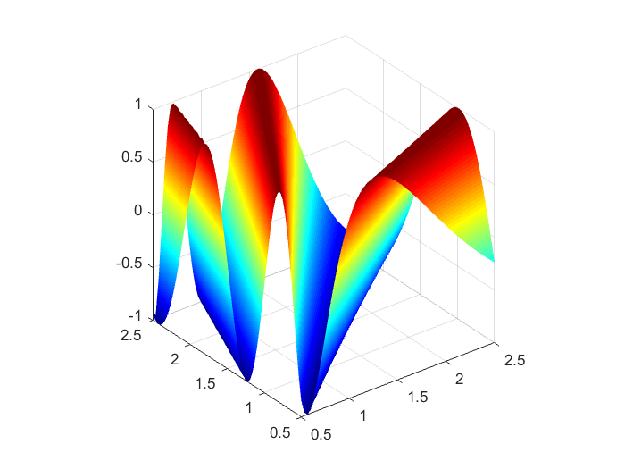

Contents
Define deterministic solver
% the deterministic inputs x0=1; v0=0; T=10; d=0; % function handle [x, v]=solve_func([m,k]) solve_func = @(q)(spring_solve(x0, v0, q(1), d, q(2), T)); % define the output component we are interested in c=1;
Plot true response surface
% Define mesh k,m [q, els]=create_mesh_2d_rect(6); %coordinates and connections q=q*2-1+1.5; %scale from [0,1] to [0.5,1.5] % plot the mesh plot_mesh(q,els); % Initialize memory for solution vector u=zeros(size(q,2),1); for j=1:size(q,2) % Compute position and speed of the mass at meshpoint u_comp= solve_func(q(:,j)); % take the 'c'th component of the solution u(j)=u_comp(c); end % plot the true response surface plot_field(q, els, u, 'view',3, 'show_mesh', false)